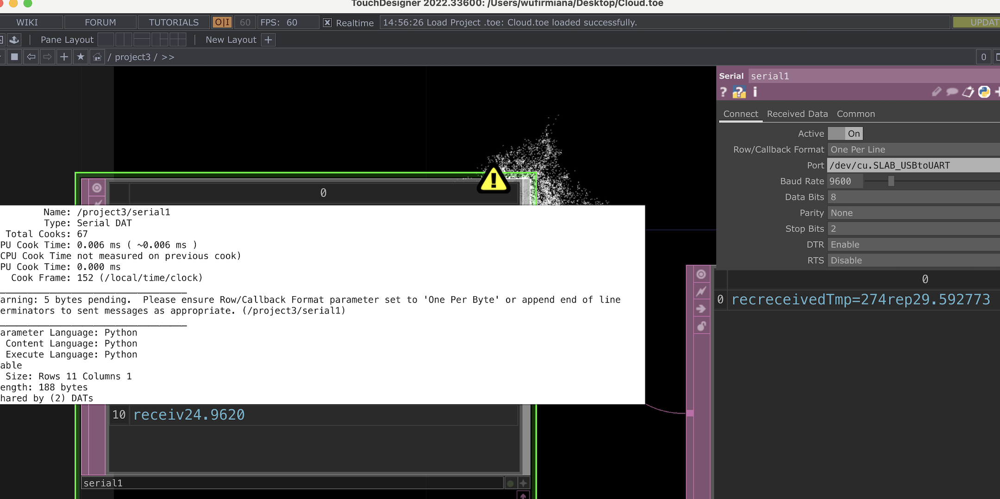
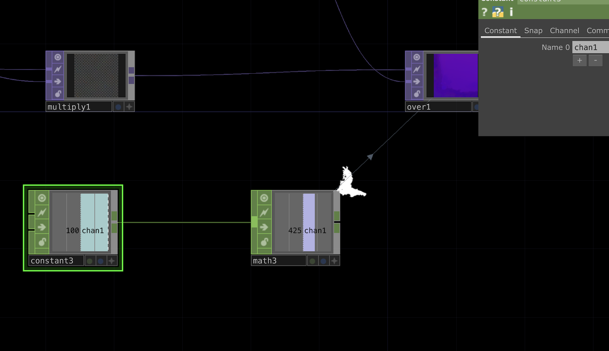
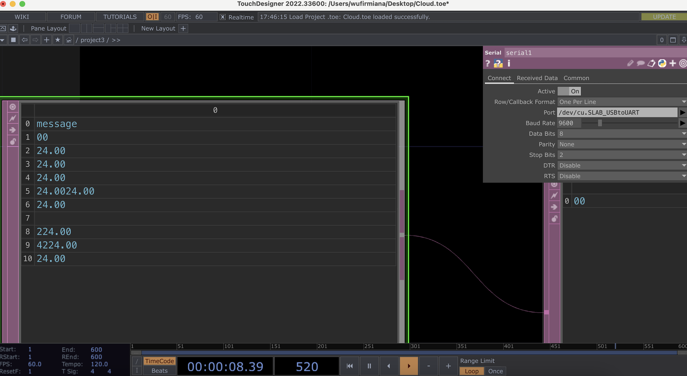

Cloud and Pond
01. Concept
JR's and my creatures are clouds and ponds,they are in the same environment and receive relevant data. The diagram shows our Work flow.

My clouds are affected by JR's temperature sensors. The higher the temperature, the smaller the cloud; the lower the temperature, the larger the cloud. When the clouds are big enough, it rains. The size of the rain is controlled by a air pressure sensor.
This is a team project. To see JR's work, please click here: https://jiaaaruiii.github.io/ACCD-CT3-JR/project3creature/creature.html
02. Process
Step1: TouchDesigner Visualization
My cloud went through two updates. The first time, I wanted to make a simple cloud with Noise components. But Noise's visual was more like a mist than a cloud and didn't have the effect I wanted. I checked all the components and finally found a component called Particle GPU. This component looks better than Noise, but it doesn't reflect the fluffiness of the clouds.


Eventually I found a tutorial and I referenced part of it to make a new cloud. This is the link to the tutorial:
https://www.youtube.com/watch?v=ZgYxo6o-o9s&t=634s
The 3.0 version cloud is the best one. I learned something new from the tutorial.

Step2: Coding
To connect JR's data, we have to use each other's feed. Base on the code we learned in class, here is our test code.

Step3: Hardware Connection
Connecting the air pressure sensor was a little challenging for me.
This is my first time using this sensor and even though it says Chinese on it I still don't know how to operate it.
Thanks to JR, she help me find a link:
https://www.homemade-circuits.com/hx710b-air-pressure-sensor-datasheet-how-to-connect/
I successfully connected this sensor according to the interface cross-reference on Adafruit.

03. HUGE PROBLEM
Cloud2-Test
When we tested the code in class with a second visual, it worked.
However, on Monday when we retested the new vision, my port started receiving weird data. On the right, we can see the component is receiving not only the numbers. I tried to slove this in many ways. I changed the port, redo the coding, switch the connection with JR...None of these worked.

For now I've looked for a substitute way to create a constant range using the temperature range we measured as the base value. This way the cloud can vary in the range of 15-30.

Till Now...
So for now, we still don't know what's happened with the connection. With Maxim's help, I am trying to use potentiometer to debug. The video you see is not the last version.
